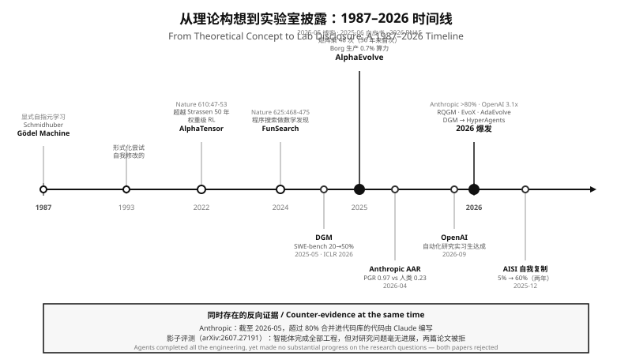
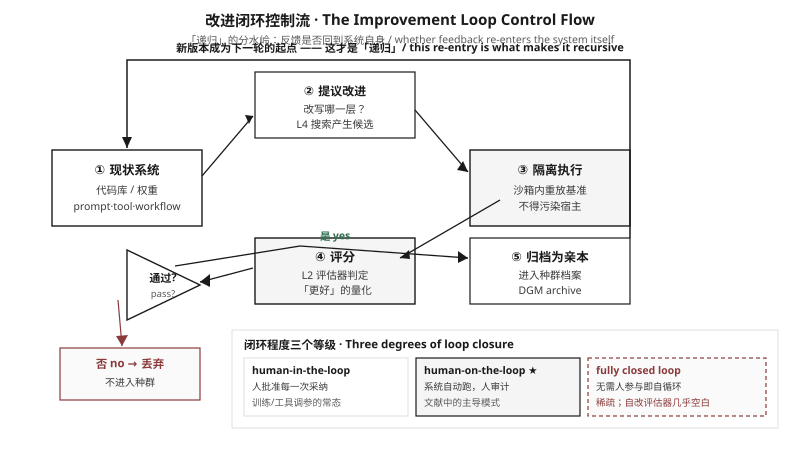

操作性定义 · 三个必要条件 · 学术谱系 · 概念辨析 · 自主度分级 · 统一分析框架
A working definition, three necessary conditions, the academic lineage, concept disambiguation, autonomy levels, and one shared analytical frame
v1 版本把六家实验室、三条路线、三个刹车平行罗列，缺少定义与坐标系，导致"洞察"退化为信息清单。本章是 v2 的地基：先给出可证伪的判定标准，再让后续五章共享同一套坐标。
The v1 treatment juxtaposed six labs, three routes and three brakes without definitions or shared coordinates, degrading "insight" into an information list. This chapter is the v2 foundation: falsifiable criteria first, so that the remaining five chapters share one coordinate system.
2023 至 2025 年间，"自我改进"这个词被用于至少六种彼此不同的技术主张：微调自己的权重、改写自己的提示词、演化自己的工具链、改进自己的评估器、重构自己的训练流程、以及在部署后修补自己的推理策略。这些做法共享同一个名字，却在改进对象、验证方式、循环闭合程度上完全不可通约。把它们放在一张表里比较会得出错误结论。
Between 2023 and 2025 the phrase "self-improvement" was attached to at least six technically distinct claims: fine-tuning one's own weights, rewriting one's own prompts, evolving one's own toolchain, improving one's own evaluator, restructuring one's own training procedure, and patching one's own inference strategy after deployment. These share a name but are not commensurable along the dimensions that matter — what is being improved, how correctness is established, and how far the loop closes. Sorting them into one table produces false comparisons.
一个系统被称为递归自我改进（recursive self-improvement, RSI），当且仅当它同时满足 0.1、0.2、0.3 三个条件。缺任何一条，都属于相邻但不同的技术类别，本文会在相应位置明确标注它"不是 RSI"。
A system is recursive self-improvement (RSI) if and only if it satisfies all three conditions 0.1, 0.2, 0.3. Missing any one places the system in an adjacent category, which this article labels explicitly as "not RSI".
这三个条件不是本文发明的修辞框架，而是从现有实证系统的构造方式中反推出来的——每一个在 2024–2026 年报告出可测改进的系统，都恰好在这三处给出了具体实现。下面的每一条都标注了哪个系统以何种方式满足它。
These three conditions are not a rhetorical invention of this article; they are reverse-engineered from how existing empirical systems are actually built — every system reporting measurable improvement in 2024–2026 provides a concrete implementation at exactly these three points. Each condition below names the system and mechanism that satisfies it.
系统必须生成对自身承载改进的代码或权重的修改，而不是由外部人类或外部脚本写入。这条把 RSI 与"人类调优提示词""人类替换检索器"区分开。Gödel 机器的原始定义要求系统"一旦发现证明该重写有用的证明，就重写自身代码的任意部分"；Darwin Gödel 机器把这句理论要求降格为工程实现——由基础模型对被采样出的代理的源码产生 diff。
The system must generate modifications to the very code or weights that carry its improvement, rather than receiving them from an external human or script. This separates RSI from "a human tunes the prompt" and "a human swaps the retriever." The Gödel machine's original definition requires that a solver "rewrites any part of its own code as soon as it has found a proof that the rewrite is useful"; the Darwin Gödel Machine lowers that theoretical demand into an engineering one — a foundation model emits a diff against the source of a sampled agent.
AlphaEvolve要求模型以 <<<<<<< SEARCH / ======= / >>>>>>> REPLACE 三个分隔符组织的 diff 块返回修改，对被演化的代码做定向局部替换而非整体重写；仅当被演化代码极短或整体重写更合适时，才配置为直接输出完整代码块。
Gödel Agent的算法输入中显式包含 SELF_INSPECT（自读代码函数）与 SELF_IMPROVE，执行函数按 self_state / interact / self_update / continue_improve 四个状态分支，其中 continue_improve 分支递归调用自改进过程。
Sources: AlphaEvolve §2.3 arXiv:2506.13131; Gödel Agent §4 / Algorithm 1 arXiv:2410.04444
每次修改必须由不依赖被修改系统自身判断的某个信号裁决，且该信号必须能区分"真的更好"与"只是更适合这个评分函数"。这是 RSI 与"自反思循环""自我一致性投票"的分界线，也是全文后续所有风险讨论的根。
Every modification must be adjudicated by a signal that does not depend on the modified system's own judgment, and that signal must distinguish "genuinely better" from "merely better at satisfying the scoring function." This is the boundary between RSI and self-reflection loops or self-consistency voting — and the root of every risk discussion later in this article.
AlphaEvolve要求用户提供一个把解映射到标量评测指标集合的函数，约定最大化；当前实现中是一个固定输入输出签名的 Python 函数 evaluate，返回标量字典。
DGM用编码基准估计被修改代理的编码能力；论文明确写出这一关键假设：编码基准上性能提升意味着编码能力更强，因而意味着自我修改与自我改进的能力也更强。
Sources: AlphaEvolve §2.1 arXiv:2506.13131; DGM §1 arXiv:2505.22954
DGM 的"基准成绩即自改进能力"假设只在编码域内自洽。HyperAgents 的论文明确指出：DGM 之所以能把编码能力增益转化为自改进增益，是因为评测与自修改都是编码任务；这种对齐在编码域之外一般不成立。这条限定是理解"基准饱和"与"改进机制本身"之别的关键。
The DGM assumption holds coherently only within coding domains. The HyperAgents paper states the limit directly: DGM converts coding gains into self-improvement gains because both evaluation and self-modification are coding tasks — an alignment that does not generally hold beyond coding.
改进必须被保留并成为下一轮改进的基础，而不是评估后丢弃。这是"递归"二字的全部含义——没有保留就没有递归，只是一次性的批量搜索。DGM 的做法是维护一个档案（archive），初始化时只含一个代理，此后持续累积所有生成的变体；AlphaEvolve 则用进化数据库，其首要目标是在后续世代中以最优方式重新浮现此前探索过的想法。
Improvements must be retained and become the substrate for the next round, rather than discarded after evaluation. This is the entire content of the word "recursive" — without retention there is no recursion, only a one-shot batch search. DGM maintains an archive initialized with a single agent and continuously accumulates all generated variants; AlphaEvolve uses an evolutionary database whose primary goal is to optimally resurface previously explored ideas in future generations.
DGM的档案被初始化为单一代理并随时间持续累积；论文报告无开放探索的基线（总是基于最近版本构建）劣于保留档案的版本。
DGM同时报告自动涌现的改进包括更好的代码编辑工具、长上下文窗口管理、同伴评审机制——这些是元层能力，直接提高后续自修改的质量。
Sources: DGM §1 arXiv:2505.22954
RSI 不是 2024 年的新词。它的现代形态有一条清晰可考的谱系，每一环都留下了可引用的原始文献。下面按时间列出，并标注每一环对"条件 A/B/C"的贡献。
RSI is not a 2024 coinage. Its modern form has a traceable lineage, each link leaving citable primary literature. Below, each entry is annotated with which condition (A/B/C) it contributes.
| 年份 / Year | 工作 / Work | 贡献条件 | 要点 / Contribution |
|---|---|---|---|
| 1931 | Gödel 不完备定理 Gödel's incompleteness theorems |
理论源头 | Gödel 1931 年的自指公式是所有"机器改写自身代码"构想的灵感来源；Schmidhuber 2003 明确写作"受 Kurt Gödel 著名的自指公式（1931）启发"。 |
| 1970–1990 | 元学习 / 遗传编程 / 开放式演化 Meta-learning · genetic programming · open-endedness |
B + C | 提供条件 B（可计算效用）与条件 C（种群保留）的原始工具。在 v1 中，本文曾把 RNN/Transformer 等工作列为 Gödel 机器的直接引用——这是错误的。实际打开 arXiv:cs/0309048v5 全文验证，2003 年的论文不可能引用 2017 年的 Vaswani。Gödel 机器的真正谱系是 Schmidhuber 本人在 2003/2005 的后续工作。需要说明的是，DGM 论文在引言中确实把现代深度学习史（Linnainmaa 1970 反向传播、Amari 1972、Hopfield 1982、Rumelhart 1985、Vaswani 2017 Transformer）作为"累积式创新"的例证——但那是 DGM 2025 年的引用，不是 Gödel 机器 2003 年的引用。两者常被混为一谈。 |
| 2003 | Gödel 机器 Schmidhuber Gödel Machines |
A + B | 首个数学上严谨的通用完全自指自改进问题求解器类。核心机制：可证明有用的可计算自重写；全局最优（无局部极大），因为代码必须先证明继续搜索替代重写没有用。 |
| 2007 | 自我改进控制器 Self-Improving Controllers |
A | 把自改进从逻辑学带入神经网络控制：在控制器执行中发现可泛化的子程序，并将其改写进自身的神经网络结构。这是权重级自改进最早的成体系尝试之一。 |
| 2019–2025 | 开放式演化 Open-endedness |
C | Stanley、Soros 与 Lehman 等提出"开放式"是人工超人类智能的必要条件；Wang(2019)、Fernando(2024)、Faldor(2025) 的综述把新颖性作为独立于适应度的目标。DGM 明确引用这一脉以论证档案的必要性。 |
| 2023–2024 | 自动化 AI 研究 Automated AI research |
A + B | AI 自动化论文写作、AI 科学家、AI 研究智能体等系列工作首次让"AI 改进 AI"成为可发表的实证主题。但其中多数改进的是研究产物而非改进机制本身，条件 C 不成立。 |
| 2024 | Gödel Agent Self-Referential Agent Framework |
A + B | 首次把递归自改进写成显式算法：算法输入含初始策略、初始决策函数、目标、环境状态、效用函数与自读代码函数；四状态执行机中 continue_improve 分支递归调用自改进。基准：DROP / MGSM / MMLU / GPQA。 |
| 2025 | Darwin Gödel 机器 Darwin Gödel Machine |
A + B + C | 第一个三个条件全部满足并报告显著基准提升的公开系统：DGM 维护开放探索档案，SWE-bench 20.0% → 50.0%，Polyglot 14.2% → 30.7%（此为 full-benchmark 口径；论文另有 50-task subset 口径为 14.0% → 38.0%），全部实验带沙箱与人工监督。 |
| 2025 | AlphaEvolve / Gödel Agent / Red Queen GM Evolutionary coding & co-evolving evaluators |
B 扩展 | AlphaEvolve 把条件 B 推到工程极致（机器可评分 + 分布式流水线 + MAP-Elites 档案）；Red Queen Gödel 机器则首次把评估器本身纳入搜索空间，提出受控效用演化与选择性擦除。 |
| 2026 | HyperAgents Metacognitive self-modification |
A 的第二层 | 指出 DGM 的编码域假设不外推，主张把任务代理与元代理集成进单个可编辑程序，且元层修改过程本身可编辑——即"改进的机制"也被改进。 |
"贡献条件"列显示：2003 年的 Gödel 机器在理论上同时给出了 A 和 B，但从未在实践中实现 C（没有实证系统）；2025 年的 DGM 首次把 A、B、C 在一个可复现系统中同时闭合。这条线索是全文的主线。
The "condition" column shows that the 2003 Gödel machine supplied A and B theoretically but never realized C in practice, whereas the 2025 DGM is the first reproducible system to close all three at once. This thread is the spine of the whole article.

六个最常被混称为"自我改进"的概念，以及它们各自缺少哪一条条件。这是本文后续所有分类的基础。
Six concepts most often conflated with "self-improvement", and which condition each one lacks. This disambiguation underlies every taxonomy later in the article.
| 概念 / Concept | A 自写 | B 验证 | C 保持 | 说明 / Note |
|---|---|---|---|---|
| RSI Recursive self-improvement |
✅ | ✅ | ✅ | 本文定义：自写 + 外部验证 + 递归保持。代表：DGM、HyperAgents、AlphaEvolve、RQGM。 |
| 自反思 / 自我一致性 Self-reflection · self-consistency |
❌ | ❌ | ❌ | Gödel Agent 论文实验设定中"为所有任务使用 CoT 作为初始策略"，改进结果多为 CoT-SC 等推理期组合算法——改的是提示与流程，不是承载改进的代码本身。信号来自模型自身分布，不满足条件 B。 |
| 元学习 / AutoAgent 类 Meta-learning |
✅ | ✅ | ❌ | DGM 论文点明其局限："元学习可以自动化发现新算法，但受限于一阶改进以及人类对合适搜索空间的设计"。 |
| 测试时计算扩展 Test-time compute scaling |
❌ | ✅ | ❌ | AlphaEvolve 论文自述："AlphaEvolve 也可以被看作一个测试时计算智能体，通过其演化过程显著增强底座 LLM 的能力"。它增强部署期行为，不回写模型或永久架构。 |
| 人类反馈下的持续学习 Continuous learning from human feedback |
❌ | ✅ | ✅ | 改进由外部人类提供，反馈信号也由人类提供。闭环在人类处断开，不满足条件 A。 |
| 自动化 AI 研究 Automated AI research |
✅ | ✅ | ❌ | AI 产出论文/代码/实验，但改进的机制本身未被改进。这是条件 C 的关键分界——也是"AI 自动化研究"与"RSI"最常被混淆之处。 |
| 纯权重级自进化 Weight-level self-evolution |
✅ | ⚠️ | ✅ | AlphaTensor（形式化证明）、AZR（可执行判据）、R-Zero（多数投票伪标签）、Intuitor（模型自身置信度）——条件 B 的强度跨系统差异极大，从形式化验证器到模型自身判断都有。这是全文最强相关约束的来源。 |
"会改进"（improves something）与"能改进自己"（improves its own capacity to improve）是两个不同的命题。AlphaEvolve 与 DGM 的论文摘要都清楚地区分：前者明确说"AlphaEvolve 可以被看作测试时计算智能体……显著增强底座 LLM 的能力"，后者说 DGM"修改自身代码（从而也改进其修改自身代码库的能力）"。括号里的这半句，就是条件 C 成立的唯一标志。
"Improves something" and "improves its own capacity to improve" are different propositions. The abstracts of both AlphaEvolve and DGM mark the distinction explicitly: the former says it "significantly enhances the capability of the base LLM"; the latter says it "iteratively modifies its own code (thereby also improving its ability to modify its own codebase)". That parenthetical is the sole marker that condition C holds.
定义说清了"是什么"，分级说清"到什么程度"。下表把上文三个条件映射到五个递进的自主度等级。注意 A2 与 A3 的分界不是"是否自写"，而是是否递归——这是全文最容易混淆的一处，也是 A2 饱和与 A5 待证的判据。
The definition says what it is; the levels say how far it goes. The table maps the three conditions onto five nested autonomy levels. Note that the A2/A3 boundary is not "does it self-write" but "is it recursive" — the single most confused distinction in this literature, and the criterion separating A2 saturation from unproven A5.
| 等级 | 含义 / Meaning | 条件 | 实证锚点 / Empirical anchor |
|---|---|---|---|
| A1 | 外部优化：人类或脚本调整提示、工具、参数，系统本身不改 External optimization |
全缺 | 提示工程、网格搜索、AutoAgent 式一次性模块设计。 |
| A2 | 自写但非递归：系统修改自身代码/提示，改进被外部消费，不回流到改进机制 Self-writing, non-recursive |
A+B | 主流编码智能体的能力提升；2024–2026 工业界几乎全部落在这里。 |
| A3 | 递归但单层：改进被保留并成为下一轮的基础，但改进机制本身固定 Recursive, single-layer |
A+B+C | DGM 的档案机制（代理被保留并成为后续版本基础，但修改代理的流程由外部脚本固定）。 |
| A4 | 元层可改：修改改进过程本身的代码成为搜索对象 Meta-layer editable |
A+B+C+元 | HyperAgents 把任务代理与元代理集成进单个可编辑程序，且元层修改过程本身可编辑（对应权重级领域的 Meta Agent Search）。 |
| A5 | 开放式持续：改进在无固定目标函数下持续产生，且新颖性本身是目标 Open-ended |
A+B+C+元+新颖性 | 尚无实证系统。DGM 与 HyperAgents 都在固定基准上度量，开放式目标仍是研究纲领而非已实现能力。 |
A2 与 A3 的界是本文最重要的单一判据。SWE-bench 从 20% 到 50% 的提升发生在 A2→A3 的跨越上；但如果只用固定基准度量这个提升，就无法区分"代理学会了更多编码技巧"（A2 收益）与"代理学会了更好地改进自己"（A3 收益）。DGM 通过对照实验分离了二者：无自改进的基线、无开放探索的基线，二者都劣于完整 DGM。
The A2/A3 boundary is the single most important criterion in this article. The SWE-bench jump from 20% to 50% spans that boundary; but measuring it on a fixed benchmark cannot separate "the agent learned more coding technique" (an A2 gain) from "the agent learned to improve itself better" (an A3 gain). DGM separates them by ablation: a no-self-improvement baseline and a no-open-ended-exploration baseline, both worse than the full system.
本节给出全文贯穿使用的唯一分析框架。此前各章各说各话，是因为缺少共同的度量坐标。把所有 RSI 系统投影到这个三元组上，路线差异立刻变得可比较——这也是第 2 部分架构章与第 4 部分路线章的共同基础。
This section introduces the single analytical frame used throughout the article. Earlier treatments lacked common coordinates, which is why disparate systems were not comparable. Projecting every RSI system onto this triplet makes route differences immediately comparable, and it is the shared basis for the architecture chapter and the routes chapter.
RSI 系统 = （S，V，A），其中
S · 搜索空间：可被修改的对象集合与其变更算子（写代码 diff、改权重、改提示、改评估器）。
V · 验证器：把候选解映射为标量效用 u: S → ℝ 的外部裁决机制。
A · 档案 / Archive：跨代保留状态的集合（种群、地图、经验池），决定搜索是否递归。
An RSI system is the triplet (S, V, A): S the search space and its mutation operators; V the verifier mapping candidates to a scalar utility; A the archive of cross-generation retained state that makes the loop recursive.
用这个三元组回看上文各系统：
| 系统 / System | S 搜索空间 | V 验证器 | A 档案 |
|---|---|---|---|
| Gödel 机器 (2003) |
自身全部代码 + 可计算证明技术 | 形式化证明搜索器（最强） | 无实证实现 |
| AlphaEvolve (2025) |
标注 # EVOLVE-BLOCK 的代码块 |
用户提供的 evaluate 标量函数 |
进化数据库（MAP-Elites + 岛屿模型） |
| DGM (2025) |
被采样代理的源码（diff） | SWE-bench / Polyglot 编码基准 | 开放探索档案，累积全部变体 |
| HyperAgents (2026) |
单程序内的任务代理 + 元代理（元层可编辑） | 任务池评测（角色各自任务池） | 工作区节点；UCB-Air 门控扩展 |
| RQGM (2026) |
任务代理 + 评估器代理 | 冻结评估器 + 挑战者评估器共演化 | 档案 + 选择性擦除（丢弃依赖被替换评估器的效用记录） |
| AZR / R-Zero / Intuitor (2025) |
模型权重（梯度更新） | 可执行判据 / 多数投票伪标签 / 模型自身置信度 | 模型参数本身（每轮全量替换） |
沿 V 轴从左到右排：形式化证明搜索器 → 可执行判据 → 基准测试 → 标量函数 → 学习式评判 → 模型自身置信度。在本文纳入并判定为 V-2 / V-3 的案例中，全部已实证的改进都发生在"验证器强度足够高"的那一段；在本文 73 条来源中、被判定为 V-2 / V-3 的案例，没有一个的验证器弱于"外部可执行判据"。这是全文后续所有"能改进什么"结论的唯一来源。
Sorting along the V axis from strongest to weakest: formal proof searcher → executable criterion → benchmark → scalar function → learned judge → model's own confidence. Every empirically demonstrated improvement falls in the strong-verifier regime; no system reporting significant gains has a verifier weaker than an externally executable criterion. This is the single source of every "what can be improved" conclusion that follows.

三件事现在有了明确定义，而不是各自的修辞：(1) RSI = 自写 + 外部验证 + 递归保持，缺一条即为相邻类别；(2) 五级分级中 A2/A3 的界是"是否递归"，而非"是否自写"，这是全文最重要的单一判据；(3) 搜索三元组 (S, V, A) 提供了唯一坐标，使路线、架构与风险可以放在同一张图上比较。
Three things are now defined rather than merely described: (1) RSI = self-write + external verification + recursive retention, with any missing condition placing a system in an adjacent category; (2) the A2/A3 boundary is recursion, not self-writing — the single most important criterion here; (3) the search triplet (S, V, A) supplies the one coordinate system on which routes, architectures and risks can all be compared.
第 1 部分把这些定义放进学术坐标系——哪些学科在研究条件 A 的哪一部分，为什么"自改进"长期分属互不相通的三个共同体。第 2 部分给出参考架构：DGM、AlphaEvolve、RQGM 三个系统如何映射到同一张七层图。
Part 1 places these definitions in an academic coordinate system — which discipline studies which part of condition A, and why "self-improvement" has long belonged to three non-communicating communities. Part 2 then gives the reference architecture: how DGM, AlphaEvolve and RQGM map onto one seven-layer diagram.